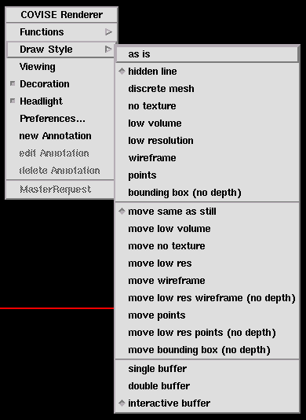

| To get the Draw Style selection menu press the right mouse button on the viewer area and select Draw Style with the left mouse button |
|  |
You can modify Draw Style (and image qualitiy) by three groups of options
Hints for use:
| The option discrete mesh is useful
to select, e. g. via SimplifySurface),
a good balance between image quality of a surface and frame rate.
The options low resolution or points improve performance and are useful for slower machines. Look at an an illustration of possible draw styles, or look into the User's Guide, chapter Inventor Renderer, or just try! |
Hints for use:
| It makes sense to choose a less expensive option (in terms of performance), e.g. low resolution or even bounding box during rotate or zoom. |